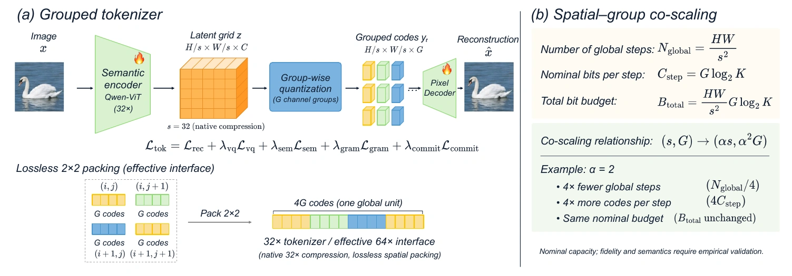
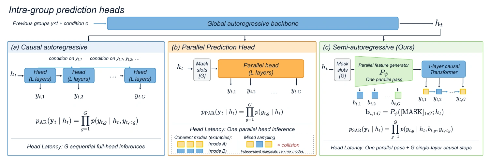
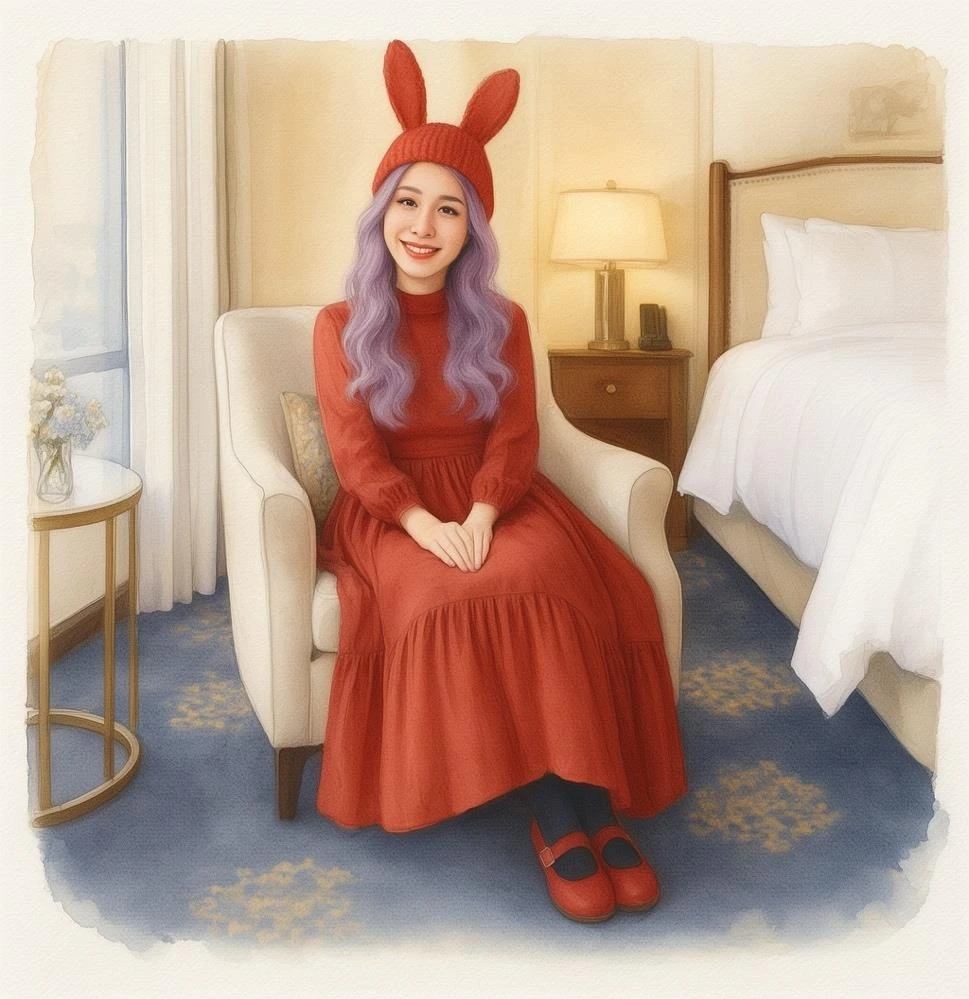
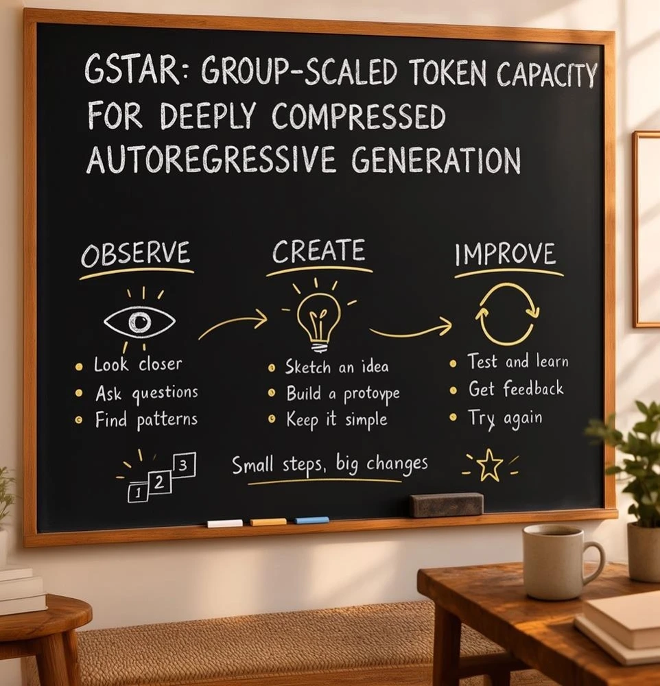

Spatial–group co-scaling
When per-axis compression grows by α, grow group size by α². The global sequence gets shorter while the nominal bit budget stays constant.
AUTOREGRESSIVE IMAGE GENERATION
Fewer spatial steps. More capacity per token.
High-quality autoregressive images in 2.5 seconds.
Generated samples from G-STAR. Click any image to view it at full size.
per 1024 × 1024 image
SPATIAL COMPRESSION64×effective interface · Flash-1.7B
GENEVAL ↑0.84G-STAR-Pro-8B · 32×
GEDIT-BENCH ↑7.45overall · Pro-8B · English full set
THE BIG PICTURE
Discrete autoregressive models offer a scalable framework for image generation. However, they face a fundamental trade-off: long token sequences preserve representation quality but slow generation, while aggressive spatial compression reduces representation capacity. Based on product quantization, we show that, under a fixed nominal information budget, group size should scale quadratically with the per-axis spatial compression factor.
Building on this principle, we propose G-STAR, a spatial–group co-scaling framework that enables 32× and even effective 64× compression while preserving strong reconstruction, understanding, and generation performance. Since larger groups introduce intra-group dependencies that must be modeled efficiently, we introduce a semi-autoregressive decoder that combines parallel feature computation with lightweight causal modeling.
Our highly compressed models perform competitively across GenEval, DPG-Bench, PRISM, LongText-Bench, and Qwen-Image-Bench. At 1024 × 1024 resolution, G-STAR-Flash-1.7B generates each image in 2.5 seconds on a single NVIDIA H200, demonstrating high-quality autoregressive generation at low latency.
Condensed from the manuscript abstract. All results on this page are manuscript-reported.
01 / METHOD
Keep the global sequence short, while giving each position enough discrete codes to represent the image.
When per-axis compression grows by α, grow group size by α². The global sequence gets shorter while the nominal bit budget stays constant.
Pack a 2 × 2 neighborhood of native 32× tokens into one global unit. The effective 64× interface retains every quantized code.
Compute rich features for all group slots in parallel, then use a lightweight, single-layer causal Transformer to preserve code dependencies.

At fixed image size and codebook size, doubling spatial compression reduces global steps by four. Increasing codes per step by four preserves the nominal capacity.
Illustration at 1024², starting from G = 8. Nominal capacity is not a guarantee of fidelity.
A fully causal head repeats expensive computation for every code. A fully parallel head drops intra-group dependencies. G-STAR runs the heavy trunk once and keeps only a lightweight causal module sequential.

02 / RESULTS
Pro for quality. Flash for low-latency generation.
| Model | Compression | Params. | GenEval ↑ | DPG ↑ | PRISM ↑ | LongText ↑ | Qwen-Image ↑ |
|---|
Source: manuscript Table 1. PRISM: English combined score (0–10), Qwen2.5-VL-72B judge. LongText: English subset. Qwen-Image-Bench: overall score (0–100). Compression denotes the per-axis spatial factor; Flash uses a packed effective 64× interface. “—” means unreported.
At 32×, the G-STAR tokenizer reaches 25.12 dB PSNR on ImageNet 512². The effective 64× variant reaches 23.90 dB, compared with 23.98 dB for Open-MAGVIT2 at 16×.
Manuscript Table 8 · reconstruction evaluation.
The discrete f32g16 tokenizer achieves a paper-reported average of 64.7 across eight understanding benchmarks, compared with 64.6 for continuous visual features.
Manuscript Table 7 · matched understanding comparison.
03 / EFFICIENCY
Architecture and implementation compound to an 8.9× speedup over the causal-head baseline.
Manuscript Figure 5 · G-STAR-Flash-1.7B · 1024 × 1024 · batch size 1 · NVIDIA H200 · BF16. Median of three timed trials after three warm-up iterations. These are cumulative pipeline optimizations, not separate model comparisons.
| Head | GenEval ↑ | DPG ↑ | PRISM ↑ | Head latency ↓ |
|---|---|---|---|---|
| Causal AR | 0.8386 | 82.48 | 5.46 | 6.44 s |
| Parallel | 0.7800 | 79.98 | 4.72 | 1.77 s |
| Semi-AR | 0.8253 | 82.60 | 5.46 | 3.41 s |
Manuscript Table 4. This reports head time at 512², distinct from the end-to-end Flash timings above.
04 / IMAGE EDITING
G-STAR also supports image editing. Move the sliders to compare the paper’s original and edited examples.

OriginalEditedTransform the portrait into a watercolor illustration.

OriginalEditedReplace the blackboard heading with the G-STAR title.
Examples from manuscript Figure 1. Descriptions summarize the edit; they are not verbatim prompts.
RESOURCES
This preview follows the anonymous manuscript. Author details, a public paper URL, code, model weights, and a final BibTeX entry will be added when available.
Open the Overleaf manuscript ↗Draft source: local 18-page manuscript snapshot saved September 26, 2026; title and abstract checked against the supplied Overleaf project. Later Overleaf revisions may not be reflected in the figures or tables.